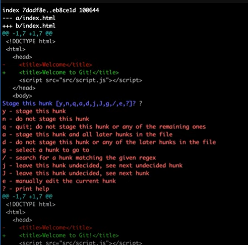

- Абсолютні величини (це см мм pt pc in(дюйм))
- Відносні величини (Ті величини які від чогось залежать) Зазвичай використовують px, але є ще й %
- є такі величини як em (залежить від висоти шрифту поточного елемента) ex (залежить від символу х) rem(залежить від розміру шрифту кореневого елемента)
- vh - Еквівалентно 1% висоти вікна браузера.
- vw - Еквівалентно 1% ширини вікна браузера.
Що таке HTML
HTML (HyperText Markup Language — «мова гіпертекстової розмітки») — базовий будівельний блок Інтернету. Він
визначає зміст та структуру веб-контенту. Інші технології, крім HTML, зазвичай використовуються для опису
зовнішнього вигляду/подання (CSS) або функціональності/поведінки (JavaScript) веб-сторінки.
Під гіпертекстом ("hypertext") розуміються посилання, які з'єднують веб-сторінки один з одним або в межах
одного веб-сайту або між веб-сайтами. Посилання є фундаментальним аспектом Інтернету. Завантажуючи контент в
Інтернет і пов'язуючи його зі сторінками, створеними іншими людьми, ви стаєте активним учасником Всесвітньої
мережі.
HTML використовує розмітку ("markup") для відображення тексту, зображень та іншого контенту у веб-браузері.
HTML-розмітка включає спеціальні "елементи", такі як
head, title, body, header, footer, article, section, p, div, span, img, aside, audio, canvas, datalist, details, embed, nav, output, progress, video.
та багато інших
UNIX команди в windows
Це лише деякі з найбільш поширених команд в Unix-подібних системах, існує багато інших команд для роботи з файловою системою, мережами, обробки текстів тощо.
- ls: Показує список файлів та папок у поточному каталозі.
- cd: Змінює поточний каталог.
- pwd: Виводить повний шлях до поточного каталогу.
- mkdir: Створює новий каталог.
- rmdir: Видаляє порожній каталог.
- cp: Копіює файли та каталоги.
- mv: Переміщує або перейменовує файли та каталоги.
- rm: Видаляє файли або каталоги.
- cat: Виводить вміст файлу.
- less/more: Дозволяє переглядати вміст файлу по сторінкам.
- head/tail: Виводить перші/останні рядки файлу.
- grep: Шукає вміст файлу за вказаним шаблоном.
- chmod: Змінює права доступу до файлів та каталогів.
- chown: Змінює власника файлів та каталогів.
- find: Знаходить файли та каталоги за різними критеріями.
- wc: Рахує кількість слів, рядків та символів у файлі.
- grep: Шукає текст у файлах.
- tar: Архівує та розархівує файли.
- ssh: Забезпечує безпечний зв'язок з іншими системами.
- curl/wget: Завантажує файли з Інтернету.
Семантичні теги Html
Семантика - або Семантична верстка, або семантичний HTML-код, — це підхід до створення вебсторінок мовою HTML, заснований на використанні HTML-тегів у відповідності з їхньою семантикою (призначенням), а також котрий припускає логічну та послідовну ієрархію сторінки.
Семантичні теги:
<aside> </aside>
<details> </details>
<figcaption> </figcaption>
<figure> </figure>
<footer> </footer>
<header> </header>
<main> </main>
<mark> </mark>
<nav> </nav>
<section> </section>
<summary> </summary>
<time> </time>
<details> </details>
<figcaption> </figcaption>
<figure> </figure>
<footer> </footer>
<header> </header>
<main> </main>
<mark> </mark>
<nav> </nav>
<section> </section>
<summary> </summary>
<time> </time>
Не Семантичні теги
<div> </div>
<span> </span>
Блокова Модель Css
Модель коробки CSS – це, по суті, коробка, яка обертається навколо кожного елемента HTML. Він складається з полів, рамок, відступів і фактичного вмісту. Еленти бувають:
- Блокові елементи
- Рядкові елементи
- Блоково-рядкові елементи
Позиціювання Елементів
- static - Дотримується вся структура HTML коду і все стоїть на своїх місцях.
- relative - Можемо міняти положення елемента відступами top right bottom left, але наш елемент дотримується структури html і за рамки свого розташування у коді не виходить.
- absolute - Елемент може знаходитись на будь-якому місці екрана незалежно від коду html, але є один аспект якщо в елементі стоїть позиція absolute, то в батьківському класі повинна стояти позиція relative.
- fixed - Елемент також може знаходитись у будь-якому місці екрана, але при скролі екрану наш елемент буде зафіксовано на своєму місці і не змінюватиме свого положення.
- inherit - Елемент успадковує позицію свого батька.
- Елемент розташовується відповідно до нормального потоку документа, а потім зміщується відносно його найближчого прокручуваного предка та блоку, що містить (найближчого предка на рівні блоку), включаючи пов’язані з таблицею елементи, на основі значень top, right, bottomі left. Зсув не впливає на положення інших елементів. Це значення завжди створює новий контекст стекування . Зверніть увагу, що липкий елемент «прилипає» до свого найближчого предка, який має «механізм прокручування» (створений, коли overflowє hidden, scroll, autoабо overlay), навіть якщо цей предок не є найближчим фактично прокручуваним предком
Позиціювання flex Чим займається властивість align-items? Рівняє по поперечній осі! У CSS є кілька видів позиціонування, а саме static, relative, absolute, fixed, inherit. Якщо один елемент стоїть поверх іншого, то ми можемо відрегулювати це задавши вісь z. Елемент значення осі якої більше буде стояти поверх іншого, але тільки якщо один елемент стоїть у позиції relative, а інший у позиції absolute, то елемент з абсолютною
Величини в Css
Специфічність в Css
- Селектор ТЕГА
- Клас (Працює за схемою каскаду хтось останній того і тапки!).
- Айді (Найспецифічніший)
- Інлайнові стилі (Тупо найспецифічніші)
- Комбіновані селектори якщо беремо вкладеність класів (вона буде більш специфічна ніж один клас!)
- позицією буде перевага за винятком, якщо індекс осі z не буде -1
Припроцесори Sass Less Scss
В Припроцессорах це просто зручно! Тому що в них є Змінні, Міксини, Вкладеність, також перевикористання Використання @extend дозволяє передавати набір властивостей CSS З ОДНОГО СЕЛЕКТОРА В ІНШИЙ. У нашому прикладі ми збираємося створити просту серію повідомлень про помилки, попередження та успіхи, використовуючи іншу функцію, яка йде рука об руку з класами-заповнювачами. Клас-заповнювач - це особливий тип класу, який друкується тільки тоді, коли він розширений, і може допомогти зберегти ваш комплірований CSS акуратним і чистим.
Методологія БЕМ
Методологія БЕМ — одна з найпопулярніших на даний момент, в основі якої лежить домовленість про те, як розбивати інтерфейс на певні незалежні блоки. Розшифровується абревіатура як «Блок Елемент Модифікатор». Цей підхід до web-розробки дозволяє швидко створювати сайти з гнучкою архітектурою. Він знайомий багатьом, хто займається HTML/CSS версткою, але, як на мене, не досить, щоб значно спростити життя і роботу більшості твоїх колег.
Основні правила методології БЛОК
Візьмемо окремо блок - це функціонально не залежний компонент сторінки, який може бути використанний,
безкінечну кількість разів!!
Зазвичай це якісь заголовки, обгортики, Хедер, футер, все, що буде перевикористовуватися! Це й буде
БЛОК!!!
Коли ми задаємо блоку ім’я Классу, ми повинні відповідати на питання ЩО ЦЕ?? А не який і як вигляда!!
Вигадуючи імена для блоків, ми маємо максимально відображати їх зміст!
ім’я Классу пишуть розділяючи тире!! наприклад 'serch-form' тобто два слова розділені тире!!
Коли ми пишемо стилі для блока не треба їм задавати зовнішню геометрію - відступи або
позиціонування!
Основні принципи роботи з блоками!
- Блоки можна вкладати одни в одного! Допускається люба вкладеність
- Елемент не відємна частина блоку, яка не може бути використана без блоку
Елемент
ім’я Классу пишуть розділяючи тире!! наприклад 'serch-form__tile' тобто імя классу блоку два нижніх підчеркування імя нашого елементу!!
Основні принципи роботи з елементами!
- Елементи можна вкладати одни в одного! Допускається люба вкладеність
- Елемент завжди не відємна частина блоку, яка не може бути використана без блоку
- В назві класу не можна писати ієрархію ім’якласублоку__імяелемету__імяелементу так не можна рабити!!
- Елемент це не обов"язковий компонент блоку! Не у всіх блоків мають бути елементи!!
Приклад
<div class="row">
<div class="row__colomn"> </div>
<div class="row__item"> </div>
</div>
</div>
Модифікатор
Використовуємо для визначення або уточнення зовнішнього виду, стану або поведінки блоку! Коли потрібно виділити цей елемен із багатьох таких же елементів!!! При стоворення відповідає на питання Який вигляд і яка поведінка має бути у цього елемента! Модифікатор при іменуванні стоворюється таким чином Дублюємо основний класс з додаванням самого Модифікатора через одне нижнє підчеркування імя модифікатора!
Приклад
<div class="row">
<div class="row__colomn">
<div class="row__item row__item_active"> </div>
</div>
<div class="row__item"> </div>
</div>
<div class="row__item"> </div>
</div>
</div>
</div>
Микс
Даний прийом дозволяє використовувати елементи в одному обьєкті, Мікси дозволяють поєднувати, поведінку та стилі декількох обьєктів без дублювання коду, та створювати семантично нові компоненти інтерфейсу на основі існуючих!!
Детальніше...Припроцесори Sass Less Sccs
CSS препроцессор (CSS preprocessor) - це програма, яка має власний синтаксис (syntax (en-US)), але може згенерувати з нього CSS код . Існує безліч препроцесорів. Більшість їх розширює можливості чистого CSS, додаючи такі опції як: домішки, вкладені правила, селектори успадкування та інших. Ці особливості полегшують роботи з CSS: спрощують читання коду та її подальшу підтримку. Для використання CSS препроцесора потрібно встановити CSS компілятор на веб-сервер
Міксини
Вважайте, що міксини (домішки) це спрощений варіант класів в мовах програмування - ви можете захопити цілу групу CSS налаштувань і повторно використовувати на будь-який елемент, котрому ви забажаєте такий самий набір стилів. Домішки можуть приймати аргументи з можливістю установки значень за умовчуванням. У наведеному нижче прикладі ми оголошуємо міксин для квадрату і створюємо декілька різних за розміром і кольором елементів.
Змінні в Припроцессорах
Змінні в Sass працюють таким же чином, як і в будь-якій іншій мові програмування, мають ті ж самі принципи: типи даних і області застосування. Коли ми ініціалізуємо змінну, ми зберігаємо всередині неї певне значення, яке зазвичай часто повторюється в CSS, наприклад кольори палітри, розмір шрифту та інші значення.
Введення в JavaScript
JavaScript – це мова програмування, яка дає можливість реалізовувати складну поведінку веб-сторінки.
Щоразу, коли ви бачите веб-сторінку, вона не тільки відображає статичне вміст,
але і робить більше - своєчасно відображає оновлення контенту, виводить інтерактивні карти,
2D/3D анімацію, прокручує відео тощо. - будьте певні, тут не обійшлося без JavaScript.
Javascript – це динамічна мова програмування зі слабкою типізацією, яка компілюється під час
виконання.
Кожне оновлення проходить через ECMAScript — стандарт мови програмування, затверджений міжнародною
організацією ECMA згідно зі специфікацією ECMA-262.
Найвідомішими реалізаціями стандарту є мови JavaScript, JScript та ActionScript, які широко
використовується у веброзробці.
Як розшифрувати ECMASCRIPT - European Computer
Manufacturer’s Association!>
Суворий режим
'use strict' не дає новий функціонал, а як і перекладається 'суворо' транлює код, не дає виконувати небезпечні команди як eval() чи this.calle< Режим strict (суворий режим), введений у ECMAScript 5, дозволяє використовувати більш суворий варіант JavaScript. Це не просто підмножина мови: у ній свідомо використовується семантика, яка відрізняється від звичайно прийнятої. Браузери, які не підтримують строгий режим, по-іншому виконуватимуть код, написаний для суворого режиму, тому не покладайтеся на строгий режим без тестування підтримки особливостей цього режиму. Суворий і звичайний режим можуть співіснувати одночасно, а скрипт може переключатися в строгий режим у міру потреби. Суворий режим приніс низку змін до звичайної семантики JavaScript. По-перше, суворий режим замінює винятками деякі помилки, які інтерпретатор JavaScript раніше мовчки пропускав. По-друге, строгий режим виправляє помилки, які заважали движкам JavaScript виконувати оптимізацію - в деяких випадках код у строгому режимі може бути оптимізований для більш швидкого виконання, ніж код у звичайному режимі. По-третє, строгий режим забороняє використовувати деякі елементи синтаксису, які, мабуть, у наступних версіях ECMAScript набудуть особливого значення./p>
Що таке UNICODE
Unicode – це міжнародний стандарт кодування символів, який забезпечує унікальний номер для кожного символу у різних мовах та сценаріях, що робить майже всі символи доступними для різних платформ, програм та пристроїв.
Що таке Функції та для чого вони
У JavaScript можна розділити код на повторно використовувані частини, які називаються функціями.
Приклад функції:
function functionName() {
console.log("Hello World");
}
Ви можете викликати або активувати цю функцію, використавши дужки для написання її назви, ось так:
functionName();. При кожному виклику функції на консоль буде виводитись повідомлення Hello World. Щоразу
як буде викликана функція, увесь код між фігурними дужками буде виконуватись. Також у функцій є
параметри:
Параметри - це змінні, які діють як місця для заповнення тих значень, які вводяться у функцію під час її
виклику. Коли функцію визначають, її зазвичай визначають разом з одним або декількома параметрами.
Реальні значення, які введені (або "передані") до функції під час її виклику, називаються аргументами.
Щоб повернути результат з функції: Ви можете використати команду return, щоб надіслати значення
назад за межі фунції.
Область видимості в Функціях
Глобальна область видимості та функції
У JavaScript, область видимості стосується видимості змінних. Змінні, які знаходяться за межами функції,
мають Глобальну область видимості. Це означає, що їх можна побачити всюди у вашому коді в JavaScript.
Змінні, які оголошуються без ключових слів let чи const автоматично створюються в global області
видимості. Це може створити непередбачувані наслідки десь у вашому коді або при запуску функції знову.
Ви повинні завжди визначати свої змінні за допомогою let чи const.
Змінні, оголошені в межах функції, мають локальну область дії (як і параметри функції). Це
означає, що вони є видимими лише в межах цієї функції. Локальні та глобальні змінні можна
використовувати з одним і тим самим іменем. Коли ви це зробите, локальна змінна має перевагу над
глобальною змінною.
Функція може містити команду return, але не обов'язково. У цьому випадку функція не має команди
return. Натомість, коли ви викликаєте її, функція обробляє внутрішній код, але повернене значення є
undefined.
Логичні оператори
В Js першніж говорити про логічні оператори треба засвоїти матеріал з операторами більше >
Оператор меньше <, а також більш рівно >= меньше рівно <=, і на закріпелення аболютна
рівність, і абсолютна не рівність!! Особливими випадками являються>= <=, так як вони під час роботи
можуть змінювати типи данних, Наприклад 3 >='4' видасть нам не правду, але як воно буде
працювати візьме 4 змінить тип данних на число і лиш тоді буде порівнювати!!
Рядки
У JavaScript, рядки (strings) є незмінними послідовностями символів і використовуються для зберігання та обробки текстової інформації. JavaScript надає кілька вбудованих методів для роботи з рядками. Ось декілька поширених методів роботи зі строками:У JavaScript, рядки (strings) є незмінними послідовностями символів і використовуються для зберігання та обробки текстової інформації. JavaScript надає кілька вбудованих методів для роботи з рядками. Ось декілька поширених методів роботи зі строками:
toLowerCase(): Перетворює всі символи рядка на нижній регістр.toUpperCase(): Перетворює всі символи рядка на верхній регістр.charAt(index): Повертає символ, що знаходиться на вказаному індексі рядка.charCodeAt(index): Повертає числове значення Юнікоду символу, що знаходиться на вказаному індексі рядка.concat(str1, str2, ..., strN): Об'єднує два або більше рядки.includes(searchStr, position): Перевіряє, чи містить рядок підрядок, і повертає true або false.indexOf(searchValue, fromIndex): Повертає індекс першого входження підрядка у рядок, або -1, якщо підрядок не знайдено.endsWith(searchStr, length): Перевіряє, чи закінчується рядок підрядком, і повертає true або false.- new Set - це конструктор для створення нового об'єкту типу "Set" в JavaScript. Об'єкт типу "Set" представляє колекцію унікальних значень, тобто таких, які не повторюються. Давайте подивимося на приклад, як можна створити і використовувати "Set":
function isIsogram(str) { return new Set(str.toUpperCase()).size === str.length; } // new Set лиш унікальні значення тому дублів не буде! зрінюємо з розміром рядка який прийшов нам з функції якщо рівні все без повторів ні то ні!
Массиви
Об’єкти дозволяють зберігати набори значень з ключами. Це чудово. Але досить часто ми розуміємо, що нам необхідна впорядкована колекція даних, яка складається з 1-го, 2-го, 3-го і т.д. елементів. Наприклад, така колеція може знадобитись для зберігання списку користувачів, товарів, HTML елементів та ін. Використовувати об’єкти в такому випадку не зручно, тому що вони не надають методів управління порядком елементів. Ми не можемо вставити нову властивість “між” існуючих. Об’єкти просто не призначені для цього. Так як массиви не являються окремим типом данних, і відноться до обьєктів! Щоб перевірити чи дійсно наш елемент є массивом треба використати команду Array.isArray(массив) Для зберігання впорядкованих колекцій існує інший тип даних, який має назву масив, Array. Основні методи для роботи з массивами)
- push - метод який додає елемент в кінець массиву
- unshift - метод який додає елемент на початок массиву
- pop - метод який видаляє емелент з кінця массиву
- shift - - метод який видаляє емелент з початку массиву
Методи для роботи з Массиви
- map - Метод arr.map є одним з найбільш корисних і часто використовуваних. Він викликає функцію для кожного елемента масиву і повертає масив результатів виконання цієї функції.
- filter - Метод find шукає один (перший) елемент, на якому функція-колбек поверне true. На той випадок, якщо знайдених елементів може бути багато, передбачений метод arr.filter(fn). Синтаксис цього методу схожий з find, але filter повертає масив з усіх відфільтрованих елементів:
- sort - Виклик arr.sort() сортує масив “на місці”, змінюючи в ньому порядок
елементів.
Він повертає відсортований масив, але зазвичай повертається значення ігнорується, так як змінюється
сам arr. Так як за замовчуванням елементи сортуються як рядки. Щоб використовувати наш власний
порядок сортування, нам потрібно надати функцію як аргумент
arr.sort((a, b) => a - b)таким чином буде все працювати правильно за для чисел!! - forEach - Метод arr.forEach дозволяє запускати функцію для кожного елемента масиву…
arr.forEach(function (item, index, arr){ alert(`Show name ${item}`) }) - concat - Метод arr.concat створює новий масив, в який копіює дані з інших масивів та додаткові значення.
- every - Метод every() викликає передану функцію callback один раз для кожного
елемента, присутнього
в масиві доти, доки не знайде такий, для якого callback поверне хибне значення (значення, що
дорівнює false при приведенні його до типу Boolean). Якщо знайдено такий елемент, метод every()
негайно поверне false. В іншому випадку, якщо callback поверне true для всіх елементів масиву, метод
every() поверне true. Функція callback викликається лише індексів масиву, мають присвоєні значення;
вона не викликається для індексів, які були видалені або яким значення ніколи не надавалися.
Функція callback викликається з трьома аргументами: значенням елемента, індексом елемента та
масивом, яким здійснюється прохід.
function isBigEnough(element, index, array) { return element >= 10; } [12, 5, 8, 130, 44].every(isBigEnough); // false [12, 54, 18, 130, 44].every(isBigEnough); // true - indexOf, lastIndexOf, includes Пошукові методи массивів Методи arr.indexOf, arr.lastIndexOf та arr.includes мають однаковий синтаксис і роблять по суті те ж саме, що і їх рядкові аналоги, але працюють з елементами замість символів: arr.indexOf(item, from) – шукає item, починаючи з індексу from, і повертає індекс, на якому був знайдений шуканий елемент, в іншому випадку‑1. arr.lastIndexOf(item, from) – те ж саме, але шукає справа наліво. arr.includes(item, from) – шукає item, починаючи з індексу from, і повертає true, якщо пошук успішний. Треба звернути увагу, що методи використовують суворе порівняння ===. Таким чином, якщо ми шукаємо false, він знаходить саме false, а не нуль. Якщо ми хочемо перевірити наявність елемента, і нема потреби знати його точний індекс, тоді кращим є arr.includes.
- split Він розбиває рядок на масив по заданому роздільнику, щоб розбити рядок на букви просто треба вказати пусті ласпки з методом спліт. Метод split перетворює рядок на массив, на відмінно від методу join
- reduce Методи reduce та reduceRight Вони
використовуються для обчислення якогось одного значення на основі всього масиву.
У reduce ось такі аргументи
Аргументи:
accumulator – результат попереднього виклику цієї функції, дорівнює initial при першому виклику
(якщо переданий initial),
item – черговий елемент масиву,
index – його індекс,
array – сам масив.
let arr = [1, 2, 3, 4, 5]; let result = arr.reduce((sum, current) => sum + current, 0); alert(result); // 15 - find Метод find()повертає перший елемент даного масиву, який задовольняє цю функцію тестування. Якщо ніякі значення не задовольняють функції тестування повертається. undefined
- fill arr.fill(value, start, end) – заповнює масив повторюваними value, починаючи з індексу start до end.
- slice slice(start, end) – створює новий масив, копіюючи в нього елементи з позиції start до end (не включаючи end). Таким чином ми можемо робити глибоку копію массивів, без привязки до массива який ми пробуємо скопіювати
- reverse «на місці» змінює порядок елементів на протилежний і повертає змінений масив.
- Підсумки - Шпоргалка
Для пошуку серед елементів:
indexOf/lastIndexOf(item, pos) – шукає item, починаючи з позиції pos, і повертає його індекс або -1, якщо нічого не знайдено.
includes(value) – повертає true, якщо в масиві є елемент value, в іншому випадку false.
find/filter(func) – фільтрує елементи через функцію і віддається перше/всі значення, при проходженні яких функція повертає true.
findIndex схожий на find, але повертає індекс замість значення. Для перебору елементів:
forEach(func) – викликає func для кожного елемента. Нічого не повертає. Для перетворення масиву:
map(func) – створює новий масив з результатів виклику func для кожного елемента.
sort(func) – сортує масив «на місці», а потім повертає його.
reverse() – «на місці» змінює порядок елементів на протилежний і повертає змінений масив.
split – перетворює рядок в масив.
join - перетворює массив в рядок;
reduce(func, initial) – обчислює одне значення на основі всього масиву, викликаючи func для кожного елемента і передаючи проміжний результат між викликами. - Для додавання/видалення елементів: push(... items) – додає елементи до кінця, arr.pop() – дістає елемент з кінця, arr.shift() – дістає елемент з початку, arr.unshift(...items) – додає елементи в початок.
-
splice(pos, deleteCount, ...items) – починаючи з індексу pos, видаляє deleteCount елементів та
вставляє items.
slice(start, end) – створює новий масив, копіюючи в нього елементи з позиції start до end (не включаючи end).
concat(...items) – повертає новий масив: копіює всі члени поточного масиву і додає до нього items. Якщо якийсь із items є масивом, тоді беруться його елементи.
Обьекти
Ви могли чути термін object раніше. Об'єкти подібні до arrays, за винятком того, що для отримання
доступу та зміни їхніх даних використовуються не індекси, а properties. Об'єкти придатні для
структурованого зберігання даних, і також можуть представляти об'єкти реального світу, такі як кіт,
наприклад.
let myCat = {
'name':'Matin',
'legs': 4,
'tails': 1,
'enemies': ['dog', 'water'],
};
Доступи до властивостей обьєкту є . точкова нотація, а також дужкова нотація [] приклад
myCat.name точкова нотація
myCat['name'] дужкова нотація
Токож треба робити перевірки на відсутність або присутність властивостей! Ми можемо використовувати
метод об'єктів .hasOwnProperty(propname), щоб визначити чи об'єкт має ім'я властивості.
.hasOwnProperty() показує true чи false, в залежності чи властивість знайдена, чи ні.
Методи Обьєктів
-
Перший це bject assign(): який дозволяє нам об’єднати кілька джерел в одну ціль для створення єдиного нового об’єкта. Object.assign() також корисний для створення дублікату існуючого об’єкта.
щоб обьєднати 2 обьєкта, використовуємо
let person = { name: 'Oleksii', age: 25, } let personTwo = { name: 'Test', age: 25, } let newСombined = Object.assign({}, person, personTwo) console.log(newСombined);
Цикли
В Js існує декілька циклів while, do while, for, for in, for of! Завдяки циклу, Ви можете запустити той
самий код декілька разів. Першим буде while, оскільки виконується за заданою істинною умовою і
припиняється, як тільки ця умова більше не буде істинною.
let i = 0;
let myArr = [];
while(i < 5){
myArr.push(i)
i++;
}
У прикладі з ліва коду цикл while виконуватиметься 5 разів і додаватиме числа від 0 до 4 до ourArray.
Найбільш поширеним типом JavaScript циклу є for цикл, тому що він виконується протягом певної кількості
разів.
For-цикли визнано трьома додатковими виразами, які розділені крапкою з комою:
for (a; b; c), де a — це твердження ініціалізації, b — твердження умови, а c — остаточний вираз.
Твердження ініціалізації виконується лише один раз, перед початком циклу. Воно переважно
використовується для визначення і налаштування змінної циклу.
Твердження умови обчислюється на початку кожної ітерації циклу і продовжуватиметься до тих пір, поки не
обчислиться до true. Коли, на початку ітерації, умова становить false, цикл припинить виконуватись. Це
означає те, що якщо умова починається як "false", ваш цикл ніколи не виконається.
Остаточний вираз виконується наприкінці кожної ітерації циклу, перед перевіркою наступної умови і,
зазвичай, використовується для того, щоб збільшити або зменшити лічильник циклу.
Наступний вид циклів, який ви вивчите, називається do...while циклом. Він називається do...while циклом,
тому що, спочатку, не зважаючи ні на що, він do (робить) одну передачу коду, а потім продовжує
виконувати цикл while поки вказана умова обчислюється до true
Що таке ES6
ECMAScript (ES) — це специфікація мови сценаріїв, створена для стандартизації JavaScript. Шосте видання, спочатку відоме як ECMAScript 6 (ES6), а пізніше перейменоване на ECMAScript 2015 , додає значний новий синтаксис для написання складних програм, включаючи класи та модулі, ітератори та цикли for/of, генератори, функції стрілок, двійкові дані, типізовані масиви , колекції (карти, набори та слабкі карти), обіцянки, удосконалення чисел і математики, рефлексія та проксі. Іншими словами, ES6 є надмножиною JavaScript (ES5). Причина, чому ES6 стала такою популярною, полягає в тому, що вона представила нові конвенції та концепції ООП, такі як класи.
Деструктуризація і що воно таке))
Синтаксис присвоєння деструктуризації — це вираз JavaScript, який дає змогу розпаковувати значення з масивів або властивості з об’єктів у окремі змінні. ES6 додав скорочений синтаксис для деструктуризації масиву.
let arr = ['1', '2', '3'];
let [one, two, three] = arr;
console.log(one); // 1
console.log(two); // 2
console.log(three); // 3
Деструктуризація обьєкту - Подібно до деструктуризації масиву, деструктуризація об’єктів розпаковує властивості в окремі змінні.
let obj = {h:100, s: true};
let {h, s} = obj;
console.log(h); // 100
console.log(s);
Ми можемо призначати без оголошення, але для цього є деякі вимоги до синтаксису:
let a, b;
({a, b} = {a: 'Hello ', b: 'Jack'});
console.log(a + b);
ES6 Rest Parameters
До ES6, якщо ми хотіли передати змінну кількість аргументів у функцію, ми могли використовувати об’єкт arguments, схожий на масив, для доступу до параметрів, переданих функції.
Параметр в function (...) називається параметром rest . Він приймає всі «зайві» аргументи, передані функції. Три крапки (...) називаються оператором розширення.The Spread Operator
Цей оператор подібний до параметра Rest, але він має інше призначення при використанні в об’єктах, масивах або викликах функцій (аргументів).
Розповсюдження у викликах функцій
Зазвичай елементи масиву передають як аргументи функції. До ES6 ми використовували такий метод: ES6 пропонує простий спосіб виконати наведений вище приклад за допомогою операторів поширення :
const myFunction = (w, x, y, z) => {
console.log(w + x + y + z);
};
let args = [1, 2, 3];
myFunction(...args, 4);
Неглибоке клонування або об’єднання об’єктів можливе за допомогою оператора під назвою Object.assign() .
Class в ES6
Клас використовує ключове слово class і містить метод конструктора для ініціалізації.
class Rectangle {
constructor(height, width) {
this.height = height;
this.width = width;
}
}
Потім оголошений клас можна використовувати для створення кількох об’єктів за допомогою ключового слова new. Наприклад:
const square = new Rectangle(5, 5);
const poster = new Rectangle(2, 3);
Оголошення класів not hoisted(не всплива), тоді як оголошення функцій всплива. Якщо ви спробуєте отримати доступ до свого класу до його оголошення, буде повернено ReferenceError.
Ви також можете визначити клас за допомогою виразу класу , де клас може бути названим або безіменним. Іменований клас виглядає так:
let Square = class Rectangle {
constructor(height, width) {
this.height = height;
this.width = width;
}
};
У неіменованому виразі класу змінній просто присвоюється визначення класу:
var Square = class {
constructor(height, width) {
this.height = height;
this.width = width;
}
};
Конструктор - це спеціальний метод, який використовується для створення та ініціалізації об'єкта, створеного за допомогою класу.
У кожному класі може бути лише один конструктор.
Методи класу в ES6
ES6 представив скорочення, яке не вимагає ключового слова функція для функції, призначеної імені методу. Одним із типів методу класу є метод прототипу , який доступний для об’єктів класу.
class Rectangle {
constructor(height, width) {
this.height = height;
this.width = width;
}
get area() {
return this.calcArea();
}
calcArea() {
return this.height * this.width;
}
}
const square = new Rectangle(5, 5);
console.log(square.area);
У наведеному вище коді area — це засіб отримання, calcArea — метод.
Іншим типом методу є статичний метод , який не можна викликати через екземпляр класу. Статичні методи часто використовуються для створення службових функцій для програми.
class Point {
constructor(x, y) {
this.x = x;
this.y = y;
}
static distance(a, b) {
const dx = a.x - b.x;
const dy = a.y - b.y;
return Math.hypot(dx, dy);
}
}
const p1 = new Point(7, 2);
const p2 = new Point(3, 8);
console.log(Point.distance(p1, p2));
Es 6 MAP
ES6 (ECMAScript 2015) внесла багато нових можливостей у JavaScript, зокрема і структуру даних "Map". ES6 Map - це колекція, що дозволяє зберігати дані у вигляді ключ-значення, де ключ може бути будь-яким типом даних (включаючи об'єкти і функції), а значення може бути також будь-якого типу. Основні тонкощі "Map": Збереження порядку: "Map" зберігає ключі у порядку їх додавання, що робить його корисним для ситуацій, де потрібно важливо зберігати порядок. Унікальність ключів: В "Map" кожен ключ може бути унікальним, тобто відсутні дублікати ключів. Розмір та ітерація: Можливість отримання кількості елементів в "Map" за допомогою .size, а також ітерація через ключ-значення за допомогою for...of чи методів .forEach(). Використання будь-яких ключів: У "Map" можна використовувати об'єкти, функції та інші типи даних як ключі, що робить його гнучким і потужним. Порівняння з об'єктами: У "Map" ключі порівнюються згідно з рівністю важливих значень, тобто два об'єкта з однаковими властивостями, але не є однією і тією ж самою посиланнями, вважаються різними ключами.
Приклад використання "Map":
// Створення Map
const myMap = new Map();
// Додавання значень
myMap.set('name', 'John');
myMap.set(42, 'answer');
myMap.set({ key: 'object' }, 'value');
// Отримання значень
console.log(myMap.get('name')); // John
console.log(myMap.get(42)); // answer
// Перевірка наявності ключа
console.log(myMap.has('name')); // true
// Кількість елементів
console.log(myMap.size); // 3
// Ітерація через Map
for (const [key, value] of myMap) {
console.log(`${key}: ${value}`);
}
// Видалення елемента
myMap.delete('name');
console.log(myMap.size); // 2
// Очищення Map
myMap.clear();
console.log(myMap.size); // 0
Це лише огляд можливостей ES6 Map. Він корисний для багатьох сценаріїв, де необхідно зберігати ключ-значення пари з підтримкою порядку та унікальності ключів.
- set(key, value): Додає пару ключ-значення до Map.
- get(key): Повертає значення, пов'язане з вказаним ключем.
- has(key): Перевіряє, чи містить Map вказаний ключ.
- delete(key): Видаляє пару ключ-значення за вказаним ключем.
- clear(): Очищає всі пари ключ-значення з Map.
- size: Властивість, яка повертає кількість пар ключ-значення в Map.
- keys(): Повертає ітератор, який містить всі ключі Map.
- values(): Повертає ітератор, який містить всі значення Map.
- entries(): Повертає ітератор, який містить масиви [key, value] для кожної пари в Map.
- forEach(callbackFn): Викликає вказану функцію callbackFn для кожної пари в Map.
Ці методи дозволяють вам ефективно взаємодіяти з Map, додавати, видаляти, отримувати значення та ітерувати через елементи.
Рекурсія
Рекурсія - це концепція, згідно з якою функція може бути вираженою в термінах сама по собі. Щоб краще
зрозуміти це, почніть з роздумів про наступне завдання: перемножте перші n елементів масиву, щоб
створити добуток цих елементів. Ви могли б це зробити, використовуючи цикл for:
function multiply(arr, n) {
let product = 1;
for (let i = 0; i < n; i++) {
product *= arr[i];
}
return product;
}
Полифіл що це
У JavaScript термін "Polyfill" (поліфіл) використовується для позначення певної техніки, яка дозволяє забезпечити сумісність коду з різними браузерами та їх версіями. Polyfill - це поліфункціональний скрипт, який може замінити відсутність підтримки певного API або функції в старих версіях браузерів. Наприклад, якщо нова версія JavaScript мови включає нові методи для масивів, але деякі старі браузери не підтримують ці методи, можна використати polyfill, який забезпечить роботу цих методів на старих браузерах. У загальному розумінні Polyfill - це код, який забезпечує роботу нової функціональності на старих платформах, які не підтримують цю функціональність.
Proxy
PROXY
Коротко про proxy - це Об'єкт, що обертає вихідний об'єкт.
Об'єкт Proxy дозволяє створити проксі для іншого об'єкта, може перехоплювати та перевизначити основні
операції для цього об'єкта.
обробник (handler)
Об'єкт-замінник, що містить пастки. Визначає, які операції будуть перехоплені, а також перевизначає
перехоплені операції.
пастки (traps)
Методи, що надають доступ до властивостей. Це аналогічно до концепції пасток в операційних системах.
ціль (target)
Початковий об'єкт, який віртуалізується проксі. Він часто використовується як джерело даних у проксі.
Для нього перевіряються інваріанти щодо розширюваності та настроюваності властивостей.
Нижче в коді реалізований один з прикладів використання проксі! Приблизно так
const data = {
name: 'Alex',
};
const handler = {
set (target, key, value) {
console.log(target);
console.log(key);
console.log(value);
}
}
const proxy = new Proxy(data, handler);
proxy.name = 'Igor';
GIT
Що таке GitGit - це система контролю версій, яка дозволяє відстежувати зміни в коді та керувати версіями файлів. Вона була розроблена Лінусом Торвальдсом з метою керування розробкою ядра Linux, але вона стала популярною та застосовується в багатьох інших проектах.
Git працює шляхом збереження "снімків" (snapshots) файлів та директорій у проекті, які можуть бути змінені в будь-який момент. Кожен знімок містить повну копію всіх файлів проекту, які були змінені, та додаткову інформацію про ці зміни, таку як дата, автор та опис.
Git зберігає ці снімки у репозиторії (repository), який може бути розташований локально на вашому
комп'ютері або на сервері в Інтернеті. Ви можете зберігати кілька версій проекту в репозиторії та
переключатись між ними, щоб переглядати та відновлювати старі версії проекту.
Git також дозволяє працювати з гілками (branches), що дає можливість розробляти різні функції проекту
паралельно та злити їх в одну основну гілку, коли вони готові.
Git має багато корисних функцій, таких як відстеження змін, злиття гілок, синхронізація з сервером та інші, що дозволяють керувати розробкою проекту та забезпечують ефективну співпрацю між розробниками. Основна ідея Git полягає в тому, щоб дати розробникам засіб для збереження всіх змін в історії розробки проекту, щоб вони могли легко відновлювати старі версії,
Основні команди git
-
git config - ця команда стоворює в папці .git файл, в якому будуть налаштування по типу імені, та інших
- git init: ініціалізує порожній репозиторій Git в нас на локальній машині
- git clone: створює локальну копію віддаленого репозиторію або просто кажучи завантажує нам на локальну мишину копію ваддаленого проєкту
- git add: додає змінені або нові файли до "індексу" для подальшого коміту
- git commit: зберігає зміни в репозиторії з повідомленням про коміт,
git commit --amend: Допоможе виправити помилки в робочій дерикторії! Він просто відкочує гілку назад і перекомічує останні зміни!
- git push: завантажує локальні зміни до віддаленого репозиторію
- git pull: завантажує зміни з віддаленого репозиторію до локальної копії
- git branch: переглядає, створює або видаляє гілки, але ця команда є досить
корисною в ситуації коли ми зробили комміт який не має бути в цій гілці і ми можемо його
прибрати за допомогою команди
git branch -f branchName commitIDАле першніж змінити гілку нам треба з неї перенестися на іншу інакше git не дасть її змінити!
Щоб видалити гілку ми використовуємо команду git branch -d branchName
А щоб видалити гіглку з комітами які в ній були просто git branch -D branchName, але якщо видалення було помилковим, то просто треба створити гілку, і перенестися нею на коміт який був в видаленій гілці.. - Стан відділений HEAD: Ми може перенестися на будь який минулий стан проекту, не
важливо вказує на нього якась гілка чи ні, як що ми перенесем, наш стан (HEAD) посиланням на
коміт ось так
git checkout comitIDто це перенесе наш HEAD конкретно на той коміт який ми йому вказали, але цим ми викликаємо стан відділеного HEAD, і треба розуміти що відбувається коли ми передаємо в чекАут не гілку, а конкретний коміт, також якщо не памятаєте назву гілки можна прописати, git checkout @{-1} таким чином гіт в логах перевіре з якої гілки ми останній раз перемикалися і перемкнеться на ту гілку... - git checkout:
переходить між гілками або відновлює стару версію файлу Важливо: Бувають ситуації коли ми не закомітили зміни по причині не готовності їх, або там не працюючий код! І ми хочемо перемкнути гілку! Але буде помилка як її вирішити?
- Це просто зробити команду git checkout --force master Але це якщо вам не потрібні ті данні які ви прописали і не закомітили Воно просто перезапише файли з гілки яку ви вкажете на прикінці команди git -f branchName. Але ця штука може бути корисна чим, коли ми писали якийсь код, він по фіналу чи не вийшов чи може, замовник, сказав що відкатуємо на початок дня все, то можна просто прописати git checkout -f HEAD (HEAD можна не вказувати якщо не вказуємо гілку checkout використовує хед за замовчуванням) і таким чином воно просто поверне нам код на початок того результату який був спочтку цього комміту
Наприклад: ми хочемо повернути розробку index.html 2 тижневої давнини, але не змінюючи інші файли які напрацювали за тиждень так ось як це зробити
git checkout comitID index.htmlпри такій команді чекАут не буде перемикати нічого він просто дістане index.html і запише цей старий файл в наш новий індекс. - git show
Команда git show HEAD~~~ відображає детальну інформацію про коміт, що знаходиться на три рівні вище від поточного HEAD, чому на 3ри тому, що тільда дає нам змогу глянути конкретний коміт на конкретній вкладеності, кількість тільд можна указати цифрою ~3 так же буде як і ~~~. Кожен ~ у команді позначає батьківський коміт на один рівень вище.Використовуючи git show HEAD~~~, ви можете переглянути зміст та метадані коміту, включаючи автора, дату, повідомлення коміту та зміст файлів, що змінювались у цьому коміті. Ця команда може бути корисною для перевірки, які зміни були внесені у коміті та як вони вплинули на кодову базу. Як що хочему глянути, що в конкретному файлі у нас лежить то ми можемо скористатися командою
git show '@~':index.htmlЦя команда повністю покаже, що було в цьому файлі в батьківского коміту - git stash: Ця команда збира не закомічені зміни видаля їх з файлів та архивує їх в локальному репозиторії, а для того щоб їх повернути просто викликаємо команду git stash pop і воно докине ті зміни які були видалені, але важливо те, що воно не првязане до гілки, зміни видалити можна в одній гілкі, а примінити їх в іншій!
- git merge: зливає зміни з однієї гілки в іншу
- git status: переглядає статус файлів в репозиторії
- git reset: нам допоможе зробити відміну, якщо ми додали через команду add якісь
лишні файли або папки!
приклад як це зробити!git reset HEAD .nodeтака команда затре додану папку з локального репозиторія і при комміті вона не потрапить до онлайн репозиторія!!Команда "git reset" використовується для зміни стану Git-репозиторію. Загалом, команда "git reset" видаляє зміни з гіт-історії, повертає гіт-індекс до попереднього стану, а також може змінювати стан робочого дерева. Конкретні налаштування "git reset" залежать від використаного параметру. Наприклад, "git reset HEAD" скасовує зміни в гіт-індексі, а "git reset --hard HEAD" видаляє всі незбережені зміни в робочому дереві. z Взагалі, "git reset" - це потужна команда, яку слід використовувати з обережністю, оскільки вона може вплинути на історію комітів, що може привести до втрати даних, якщо вона використовується неправильно.
У ресата є 2 основних прапора, git reset --hard та git reset --soft мякий ресет використовують для того, щоб переробити невдалі комміти, тому що гіт таки зроблений що не можливо внести зміни в коміт коли він уже зроблений КОМІТИ НЕ ЗМІНЮЄМІ! Але можливо відкотитися назад та замінити його іншим
- git clean -f: Вона видаля не відстежувані файли і дерикторії
В команди clean є такі прапори, -d видаля директорії,
-x буде видаляти файли які ігноруются через гітІгнор
ну і -f без якого не буде працювати_ - Про refLog: Логи посилань, такі файли знаходяться за адересою cat
.git/logs/HEAD Але хед тут виступа лиш в якості того що і де ми хочемо глянути!
Також вона нам допоможе якщо ми видалили гілку, а коміти залишилися і ми вспомнили, що нам
потрібен коміт з цієї гілки, так ось лог пам'ята всі переходи, тому ці коміти можна буде там
знайти! Як мінімум 30 днів запих про коміти буде зберігатися в РЕФЛОГІ
Для гарного виводу всих цих логів, використовуємо командуgit reflog branchName - Про .gitIgnore
gitIgnore - це такий файл, за допомоги якого ми можемо вказати гіту, що нам не треба додавати до нашого комміту!
Але є один flag, який може проігрорувати, файл ігнору це флаг
--force або -f. git add -f .node
Цей флаг, дасть можливість додати, нам папку ноде в на комміт! - АТОМАРНІСТЬ
COMMIT EARLY. COMMIT OFTEN
У програмуванні, атомарність відноситься до властивості операцій, яка гарантує, що операція буде виконана повністю або не буде виконана взагалі. Якщо операція виконується в кількох етапах, атомарність означає, що інші користувачі системи не зможуть побачити проміжних результатів, поки операція не буде завершена повністю. Короче кажучи, треба розбивати комітами складні задачі на маленькі, підзачі! Щоб було простіше розуміти самому, а також коллегам які працюватимуть на проекті з вами! Якщо зробити весь код в одному коміті, це буде біда коли ми зробили якусь помилку, тоді нам гіт ніяк не допоможе в такій ситуації! А в ситуації коли в нас все розбито на маленькі комміти, ми зможемо знайти помилку в тому чи іншому комміті відкотитися на нього та виправити все, що там не так! Осб для чого це все робиться! - Додавання змін в комміт, в рамках одного файлу.
Ситуації в яких ми зробили на приклад в index.html ми додали тег хедер, і тег футер, але футер ще до кінця не доверстали, а в гіт треба терміново залити, хедер! Так ось як це зробити!
git add -p index.htmlв цій команді флаг p дає нам можливість, додавати чи не додавати, зміни в файлі, які відрізняються від минулого комміту! Такий флаг зробить diff, а далі запита що робити з цим 
Один з моментів коли можна натрапити на не розуміння, це коли ми додали папку пусту, і хочемо
скористатися git add
І це в нас не вийде бо як правило git не бачить пустих директорій! Що би додати пусту папку ми
можемо використати такий метод,
Додаємо до папки файл .gitkeep, або дадоти якийсь файл! І тоді гіт при виконані команди гіт
статус, вже буде бачити все, як має бути і помилка не буде!
Що таке NPM
Npm означає Node Package ManagerЩо таке NVM - або Node Version Manager
Менеджер версій вузла (NVM), як випливає з назви, є інструментом для керування версіями вузла на вашому пристрої. Різні проекти на вашому пристрої можуть використовувати різні версії Node. Використання лише однієї версії (встановленої npm) для цих різних проектів може не дати точних результатів виконання.
Розробка SPA на VUE-3
Vue (вимовляється /vjuː/, як і view ) - Це середовище JavaScript для створення інтерфейсів користувача.
Він будується на основі стандартних HTML, CSS і JavaScript і надає декларативну і засновану на
компонентах модель програмування, яка допомагає вам ефективно розробляти інтерфейси користувача, будь то
прості або складні.
Одна з основних концепцій для розуміння vue це Virtual DOM (DOCUMET object Model) Обьектна
модель документу! На скільки відомо після парсингу HTML сторінки, веб браузер будує ДОМ ДЕРЕВО!
Кожна операція над ДОМ це дуже ресурсойомкий і тяжкий процес! За для оптимізації ре-рендерингу
сторінки! VUE під капотом будує так назване ДОМ-дерево. Воно накопичує деяку кількість змін в ДОМ,
після чого зрівнює оригінальне дерево зі своїм віртуальним! І потім разом всією пачкою приміняються
зміни в головному ДОМ дереві! Після чого ми бачемо нову сторінку з оновленними данними!
У більшості проєктів Vue, що використовують інструменти збірки та потребують етапу збірки, ми створюємо
компоненти Vue, використовуючи HTML-подібний формат файлу під назвою Single-File Component (також
відомий як файли *.vue, скорочено SFC). Vue SFC, як випливає з назви, інкапсулює логіку компонента
(JavaScript), шаблон (HTML) і стилі (CSS) в одному файлі. Ось попередній приклад, написаний у форматі
SFC: Все в одному файлі!!
VUE-3 та компонентний підхід до розробки!
Повністю весь додатор розбивається на маленькі, а іноді і не маленькі частини, які і називаються компонентами! Важливо розуміти що як правило компоненти це перевикористовувані частини додату! При компонентному підході у дерева компонентів завжди один вузол! І як правило це самий коренвий батьківський компонент, який має назву App.vue В цей батьківський компонент вкладаються інші компоненти! Приклад App.vue > Menu.vue > MenuHeader.vue і так далі! Ще одною фічею у vue 3 є Фрагменти, це штука яка додалася в у вью 3, ми можемо мати кілька елементів вищого порядку, а у vue-2 ми повинні були притримуватися якогось кореневого елементу, який обгортавби наш контент, у вью 3 це змінилося і ми можемо дякуючи фрагментам в template мати будь яку кількість елементів, які нам потрібні для семантики!
VUE-3 та яки використовувати стилі scoped та інше!!
Синтаксис та основні поняття і вирішення проблем на VUE-3
Реактивність в vue-3 це, коли ми використовуємо модель! Під капотом вью обертає кожну модель в звичайний
js new Proxy() (Проксі дозволяє встановити деякі відстежувачі на Обьект!) Наприклад один з відстежувачів
буде слідкувати за тим коли і як обєкт був змінений!
Що саме робе vue він обертає модель в проксі і додає відстежувачі на гетери і сетери! Тобто на зміну та
на отримання обєкту! Після цього vue виклика рендер функцію яка і відрисовує оновлений інтерфейс з
новими данними!
Починаючи працювати з vue, треба нам розгорнути проект є декілька способів на приклад
CLI
Після того як ми встановили vue за допомогою npm пакетів, треба прописати команду vue create 'Та назва
проєкту',
Також можна підключити посилання, по типу bootstarp, і працювати як зі звичайною бібліотекою!!
Далі після цього буде установка пакетів node і так далі, просто магія!
По заваршенню ми отримуємо готовий пустий проект vue.
Основне на що треба звернути увагу то це папка src та папка public в папці src в нас лежить два файли
App.vue та main.js
Розглянемо спочатку файл App.vue/ основна його структура це три теги
template, script style
В тезі template ми записуємо наш html код) В js відповідно javascript код, ну, а в style стилі!
розглянемо тег script він завжди повинен починатися зі експорту на приклад
export default{
data(){
return {
};
},
}
вище показано як треба по дефолту починати писати скріпт на vue.
І так, щоб зробити прості речі, напраклад лічильник лайків нам потрібна кнопка, та якийсь лейбл)
в обьєкті дата ми повинні повернути кількість лайків ось приклад
export default{
data(){
return {
likes:0,
dizLike:0,
};
},
}
далі повернемося до нашого тега темплейт, в йому ми сторимо стандартну структуру! h1 та кнопку для
додавання лайків.
Це буде виглядати ось так
Кількість лайків 0
Кількість дизлайків 0
Вище в прикладі прості html елементи які поки просто будуть виведені на сторінку!
Далі треба зробити щоби кнопки працювали і був звязок між кнопкою і куди ми будемо дадавати лайки!
Переходимо до тегу js і там прописуємо такий скрипт
ПРИКЛАД:
export default {
data() {
return {
likes: 1,
dizlikes: 0,
};
},
methods: {
addLike() {
this.likes += 1;
},
addDizLike() {
this.dizlikes += 1;
},
},
};
Додаємо обьєкт method і в ньому прописуємо наші функції для додавання по 1-му лайку!
Дерективи (Атрибути)
Директива – це спеціальний атрибут, який починається з v-префіксу. Вони є частиною синтаксису шаблонів Vue. Подібно до інтерполяції тексту, значення директиви є виразами JavaScript, які мають доступ до стану компонента. Повна інформація v-bind та синтаксис директив обговорюються в Посібнику — Синтаксис шаблону .я Частина після двокрапки (:id) є «аргументом» директиви. Тут id атрибут елемента буде синхронізований з dynamicId властивістю стану компонента.
Поняття що таке props
Props - це скорочено від слова properties, (ВЛАСТИВОСТІ, Реквізити), ВЛАСТИВОСТІ оголошуються за допомогою параметра props:, данний параметр може приймати як [] так і {}! Після оголошення ниших властивостей, вони сберігаються в // реквізит зберігається в `this`, На додаток до оголошення реквізитів за допомогою масиву рядкових величин, ми також можемо використовувати об’єктний синтаксис:
export default {
props: {
title: String,
likes: Number,
greetingMessage: String,
isFavorite: {
type: String,
requaired: true,
default: '0'
}
}
}
В данному прикладі продемонстровано передача властивостей, таким чином,
Для кожної властивості в синтаксисі оголошення об’єкта, ключ — це ім’я реквізиту, тоді як значення має
бути функцією-конструктором очікуваного типу.
Для чого це робимо? Це не лише документує ваш компонент, але й попередить інших розробників, які
використовують ваш компонент у консолі браузера, якщо вони передають неправильний тип. А також ми можемо
передавити в пропс значання object як це показано вище, для того щоб зробити данний атрибут
обовь`язковим!!! А також ми можемо встановлювати дефолтні значення при такому способу передачі
пропісів!!
Деталі передачі реквізиту
Регістр імені реквізиту#
Ми оголошуємо довгі імена реквізитів за допомогою camelCase, оскільки це дозволяє уникнути необхідності
використовувати лапки під час використання їх як ключів властивостей і дозволяє нам посилатися на них
безпосередньо у виразах шаблону, бо вони є дійсними ідентифікаторами JavaScript: Це якщо використовуємо
Object.
А якщо використовувати, массив то там нам потрібен kebab-case, так як ми будемо їх використовувати в
HTML, І vue буде спокійно працювати з ними!
Ми використовуємо PascalCase для тегів компонентів, коли це можливо, оскільки це покращує читабельність
шаблону, відрізняючи компоненти Vue від нативних елементів. Однак використання camelCase під час
передачі реквізитів не має такої практичної користі, тому ми вирішуємо дотримуватись конвенцій кожної
мови.
Статичні реквізити проти динамічних реквізитів
Наразі ви бачили реквізити, що передавалися як статичні значення що тут мається на увазі, що ми передаємо їх як массив, і в своєму компоненті ми статично прописуємо їх , наприклад:
Ви також бачили реквізити, призначені динамічно за допомогою v-bind або його скорочення :, наприклад:
ГОЛОВНЕ В props ВОНИ НЕ ПОВИННІ ЗМІНЮВАТИСЯЧому ж не можна це робити? Тому що vue використовау односпрямований потік даних. Від батьківского компонента до дочірнього!
Ми не можемо змінювати наші пропси, але ми можемо використовувати їх як задання початкових значень,
створюємо в нашому компоненті нове значення, туди поміщаємо, значення нашого пропса і тоді вже змінюємо
нащі данні, але все ще не пропса!! Тому що їх змінювати не можна! Але при такому підході ми не змінюємо
і не суперечемо самій концепції Vue в одному потоці данних!
Але у нас бувають такі випалки коли нам необхідно змінити наші пропси, які лежать десь на сервері, або ж
інше, тож як це зробити!? Нам потрібно повідомити з дочірнього компонента батьківський, про зміну
данних! І це ми можемо зробити за допомогою вбудованого метода $emits який є чистиною
vue3 !!!
Цей метод дозволяє нам створювати власні події якы потім можна прослухати з середини БАТЬКІВСЬКОГО
компоненту!
При використанні метода $emit('toggle-favorite') ми передаємо подію виключно використовуючи синтаксис
kebab-case не зважаючи де будемо його використовувати!
emits:
По простому кажучи це: Реалізація Оголошення користувацьких подій, які випромінюються
компонентом. використовуть для зручності роботи в команді. Щоб не шукати еміти по коду!
Випромінювані події можуть бути оголошені у двох формах:
Проста форма з використанням масиву рядків
Повна форма з використанням об'єкта, де кожний ключ властивості є назвою події, а значенням є або null,
або функція перевірки.
Функція перевірки отримає додаткові аргументи, передані до виклику $emit компонента. Для Прикладу, якщо
викликається this.$emit('foo', 1), відповідний валідатор для foo отримає аргумент 1. Функція перевірки
має повертати логічне значення, щоб вказати, чи є аргументи події дійсними.
Зауважте, що параметр emits впливає на те, які слухачі подій вважаються слухачами компонентних подій, а
не рідними слухачами подій DOM. Слухачі оголошених подій буде видалено з $attrs об'єкта компонента, тому
їх не буде передано до кореневого елемента компонента. Див. Прохідні атрибути для отримання додаткової
інформації.
Vue ROUTER:
Vue Router - це офіційний роутер для Vue.js, який дозволяє створювати односторінкові додатки зі змінною адресною строкою. За допомогою Vue Router можна відобразити компоненти Vue.js на сторінці в залежності від поточного шляху.
Vue Router дозволяє створювати динамічні маршрути, параметризовані маршрути, організовувати вкладені маршрути та багато іншого. Використання Vue Router дозволяє зробити додаток більш організованим, доступним та легким для розробки та підтримки.
налаштування такі, глобально в main.js робимо імпорт
import { createRouter, createWebHistory} from 'vue-router';
далі, створюємо його!
const router = createRouter({
history: createWebHistory(),
routes:[
{path: '/teams', component: TeamsList},
{path: '/users', component: UsersList},
],
linkActiveClass: 'active',
})
Якось так! прописуємо наші сторінки, імпортуємо компоненти і все це звязуємо!
Далі якщо верстка у нас сенмантична! І нам треба дотримуватися методології то ми можемо змінити динамічні стилі які по замовчуванню в router-link
router-link - це компонент Vue, який дозволяє створювати посилання для переходу між різними сторінками в Vue Router. router-link генерує посилання на основі шляху, який ви вказуєте в якості його властивості to. Коли користувач клікає на посилання, Vue Router переключає компоненти відповідно до шляху, який вказано в to. Іншими словами, router-link дозволяє нам створювати навігацію між сторінками в нашому односторінковому додатку.
router-view - це компонент Vue, який дозволяє відображати компоненти, що відповідають за вміст сторінок, в залежності від поточного шляху в адресній стрічці. router-view повинен бути розміщений в тому місці, де ми хочемо відображати вміст сторінки. Коли маршрути змінюються, router-view автоматично оновлює відображений компонент відповідно до нового шляху.